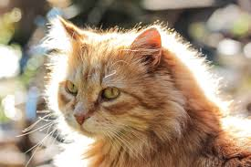
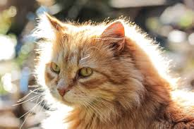

According to Wikipedia: The domestic cat (Felis silvestris catus or Felis catus) is a small, typically furry, carnivorous mammal. They are often called house cats when kept as indoor pets or simply cats when there is no need to distinguish them from other felids and felines. They are often valued by humans for companionship and for their ability to hunt vermin. There are more than seventy cat breeds recognized by various cat registries.
Cats
 
